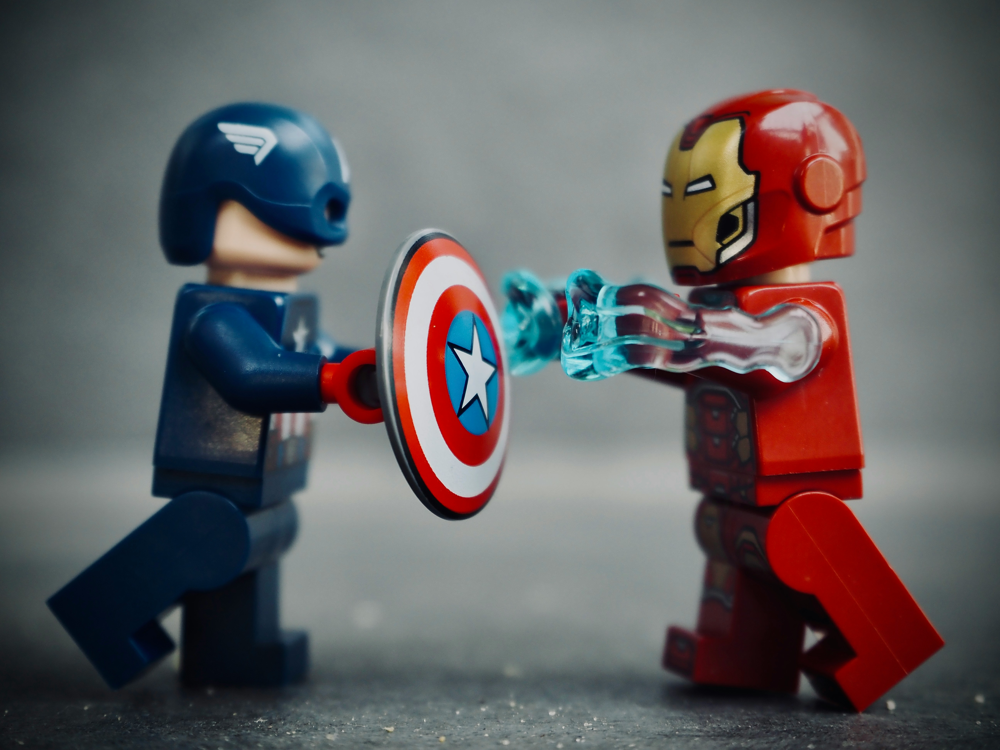

Introduction
Hello everyone!
Welcome to the landing page of my personal site that showcases some of
my interests. Some of these interests will include some of my hobbies
and things I enjoy in my freetime. Above you can find a navigation hub
to different pages you can visit to get more of an insight to the
different topics that I enjoy. I will be talking about three different
topics on this website. The topics you will see include
anime, video games, and
superheroes.
Anime
 Anime is one of my favorite things to watch on my free time. Anime to
me is fun, exciting, and can be an experience depending on the anime.
Anime comes in different genres and animation styles, that makes each
one unique. Many people all over the world enjoy watching anime!
Please check out the anime page to learn a
bit about the history of anime. As well as find out my favorite anime
and some of the animes that I have watched!
Anime is one of my favorite things to watch on my free time. Anime to
me is fun, exciting, and can be an experience depending on the anime.
Anime comes in different genres and animation styles, that makes each
one unique. Many people all over the world enjoy watching anime!
Please check out the anime page to learn a
bit about the history of anime. As well as find out my favorite anime
and some of the animes that I have watched!
Video Games
 Video games is another one of my favorite activities to enjoy on my
free time. I could play for countless hours and hours. I love playing
various genres of games. Video games is a temporary escape from the
real-world and I would consider a hobby. As you play different types
of games you will enjoy the different styles and mechanics that games
have to offer. Video games is for anyone of any age group. Whether
it's playing at an arcade or from the comfort of my home, I enjoy it
all! Please checkout out the
video games page to learn about some
history of gaming.
Video games is another one of my favorite activities to enjoy on my
free time. I could play for countless hours and hours. I love playing
various genres of games. Video games is a temporary escape from the
real-world and I would consider a hobby. As you play different types
of games you will enjoy the different styles and mechanics that games
have to offer. Video games is for anyone of any age group. Whether
it's playing at an arcade or from the comfort of my home, I enjoy it
all! Please checkout out the
video games page to learn about some
history of gaming.
As well as find out my favorite games and
gaming console!
Superheroes
 Superheroes is another topic that I enjoy! This topic ties into the other topics on this site as I love superhero animes, videogames, movies, shows, and much more. Surrounding myself with superhero content started ever since I was a little kid. Please checkout the super hero page to learn about some history of superheroes and the studio who made them. As well as find out who is my favorite superhero!